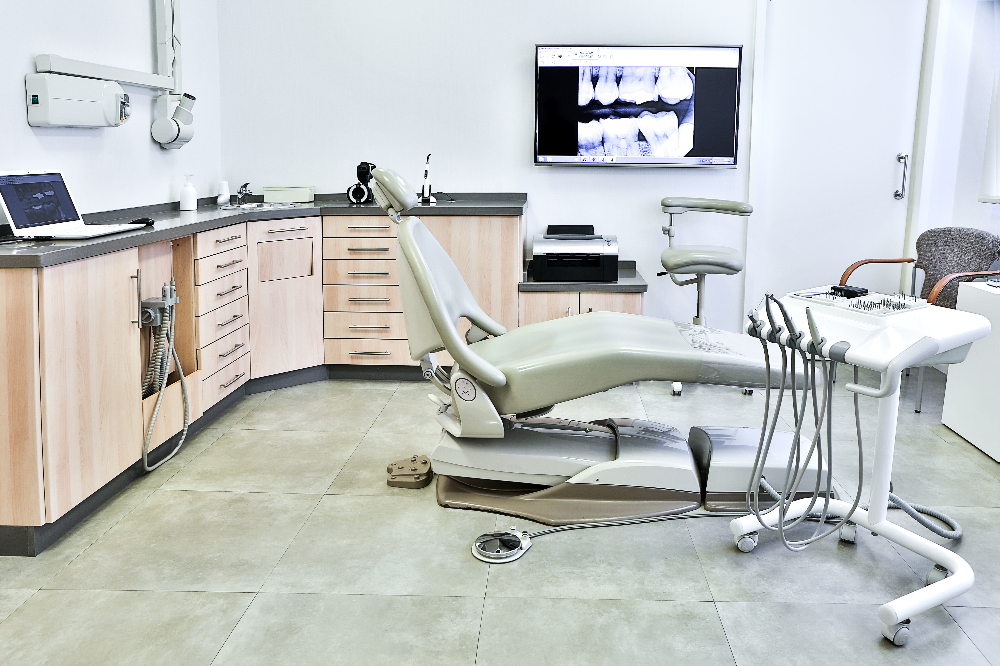
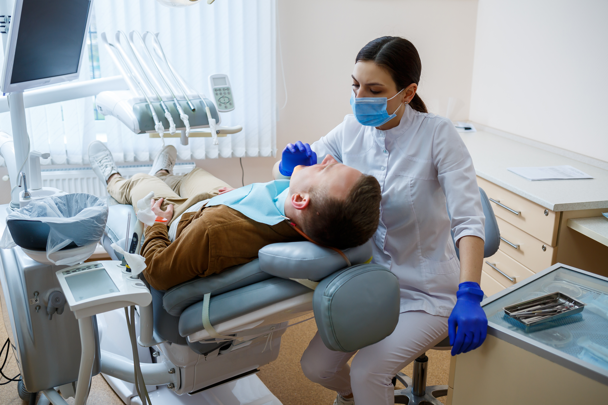

Welcome to 100MILES Dental Care!
We are reaching out with excitement about the prospect of enhancing our business's online presence and expanding our reach. We’re a dental care provider for all ages. Whether it’s a child's first dental visit or an adult's routine check-up, we care for everyone. Our patients come from all walks of life, from young children to retirees. While we help with acute and emergency dental care, we also focus on fostering relationships and providing preventative care like check-ups, cleanings, and more.
A modern dental care facility located at 33 Fantail St. in Razole for over three decades, our roots in the community run deep. Our unwavering dedication is to provide the best possible dental care for our patients. With over 50 years of experience in dental care, we pride ourselves on offering friendly, reliable, and compassionate services.

At 100SMILES Dental Care, we understand the diverse needs of our clients, and that's why we offer a comprehensive range of dental services. From routine wellness check-ups and cleanings to dental implants, orthodontics, and cosmetic dentistry, we provide a full spectrum of preventive and restorative care to keep your smile healthy and beautiful. Our experienced dentists are well-equipped to handle common dental issues, offering diagnostics, treatments, and surgeries when necessary. Additionally, we prioritize patient education, ensuring you have the knowledge and resources to make informed decisions about your dental health. Whether it's nutritional guidance, oral hygiene tips, root canal treatment or emergency care, 100SMILES Dental Care is dedicated to providing services that nurture the health and happiness of our clients.

At 100SMILES Dental Care, our promise is to deliver the highest standard of care for our patients, regardless of their age or dental needs. Our dedicated team of dentists and support staff shares a profound commitment to dental health, ensuring that our patients receive the attention and treatment they deserve.